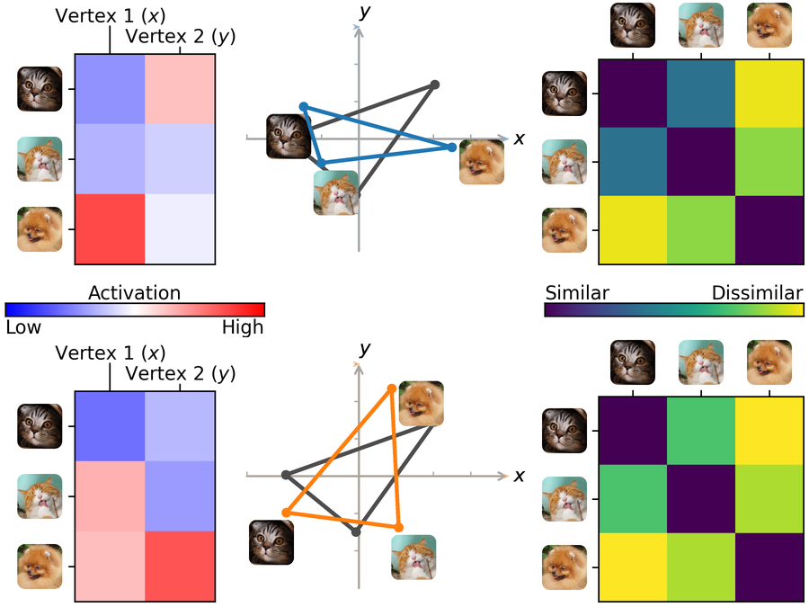
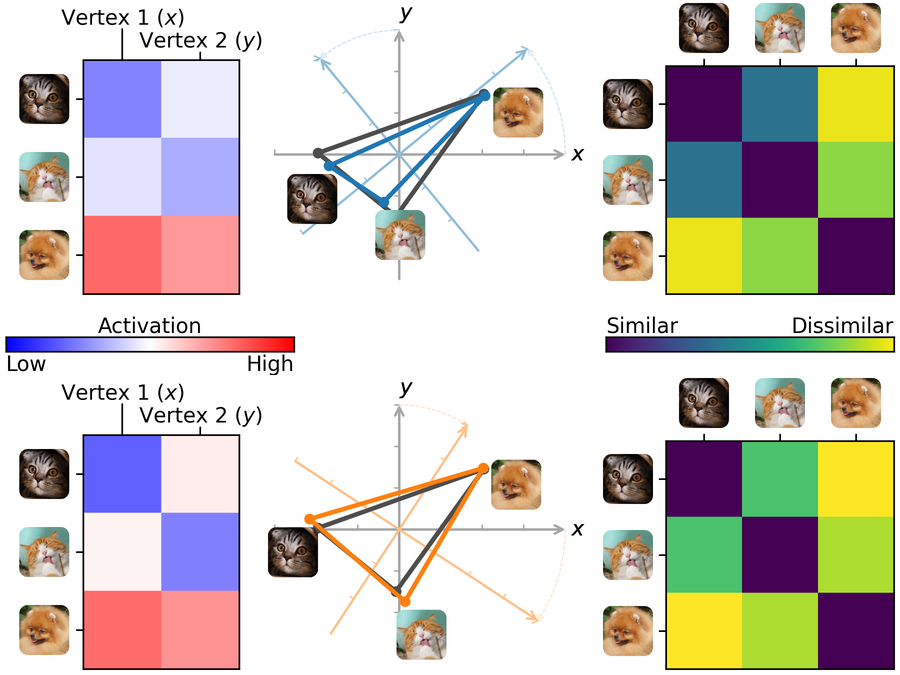
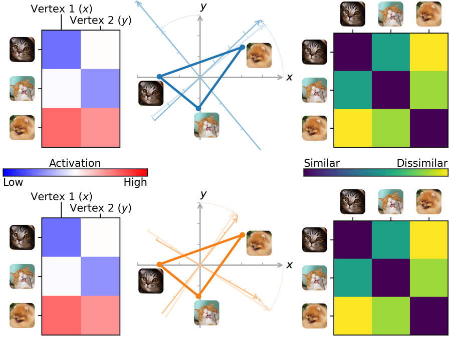
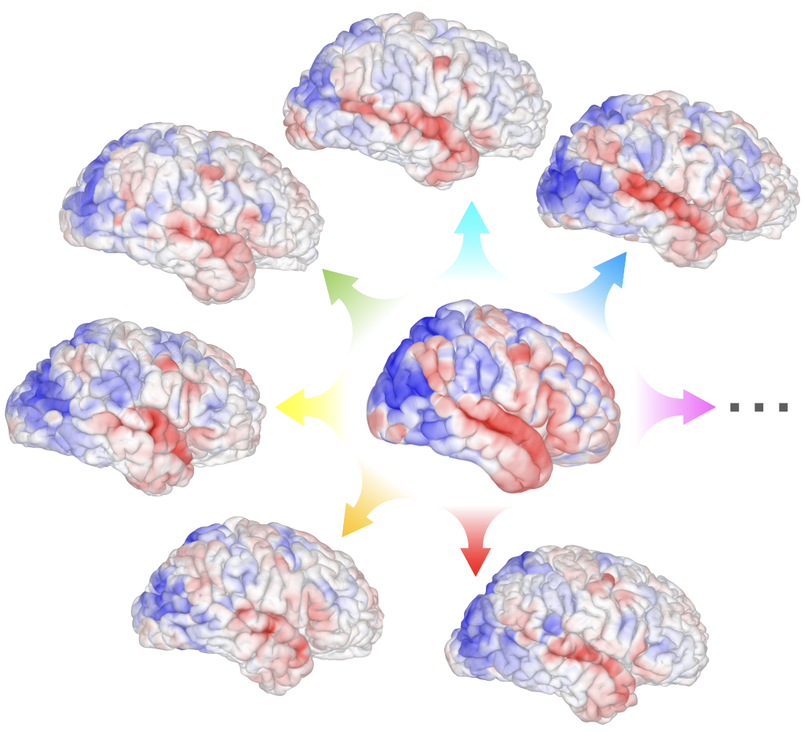

Hyperalignment and the INT model
To analyze fMRI data from multiple brains—including both their commonalities and differences—it is essential to establish functional correspondence across individuals. Hyperalignment (Haxby et al. 2020) is a functional alignment method that establishes such correspondence, based on either brain responses to the same stimuli (Haxby et al. 2011; Guntupalli et al. 2016) or on functional connectivity profiles (Guntupalli et al. 2018). The Individualized Neural Tuning (INT) model (Feilong et al. 2023) builds upon hyperalignment to model individualized brain functional organization based on a shared template.
Procrustes hyperalignment
Procrustes hyperalignment (Haxby et al. 2011) is based on the solution to the orthogonal Procrustes problem. It finds a high-dimensional rotation in the feature space to align the brain responses of different individuals into a common space while preserving the representational geometry.
Improper rotation
The rotation used in Procrustes hyperalignment can be an improper rotation, which may include a reflection. Both rotations and reflections are orthogonal transformations that preserve distances and angles between points.
For the two schematic figures below:
- The top and bottom rows denote two different individuals.
- Left column: The data matrix of their brain responses, which contains brain responses to 3 stimuli (3 rows) measured at 2 vertices (2 columns).
- Middle column: The feature space, where each dimension corresponds to a vertex, and each point corresponds to the brain response pattern to a stimulus.
- Right column: The representational geometry, which characterizes the relationships between different stimuli based on the similarities between their response patterns.
The blue and orange triangles denote the response patterns in the two individuals, respectively. The gray triangle denotes the common space, which is the template for the alignment.

Ridge hyperalignment
Ridge hyperalignment (Feilong et al. 2023) (sometimes referred to as warp hyperalignment) uses ridge regression to learn the functional correspondence across individuals. In addition to rotations or reflections, ridge hyperalignment allows scaling and shearing in the feature space, enabling more flexible alignment. This approach captures both topographic and representational differences across individuals.


Individualized Neural Tuning (INT) model
